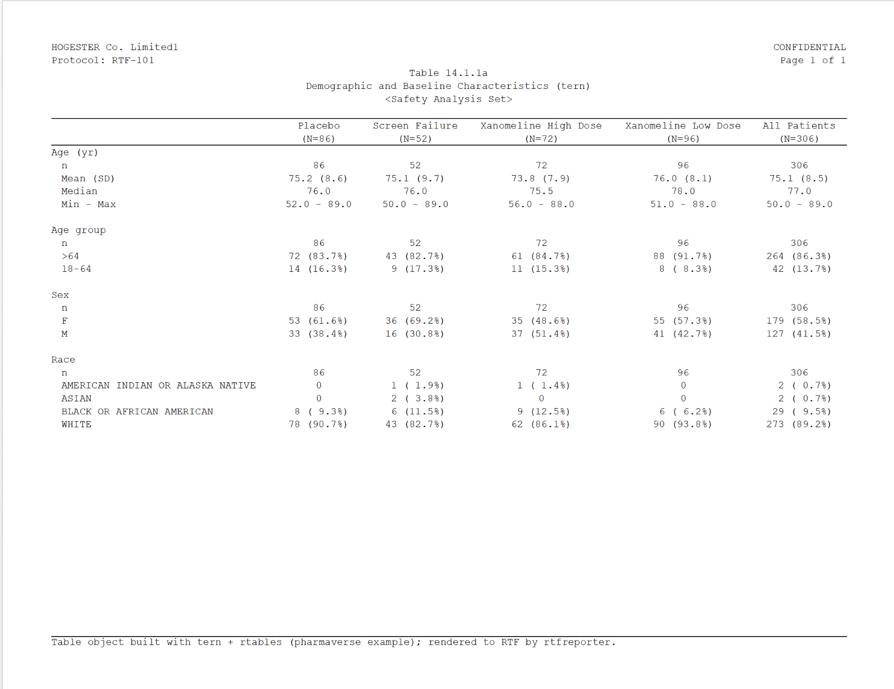
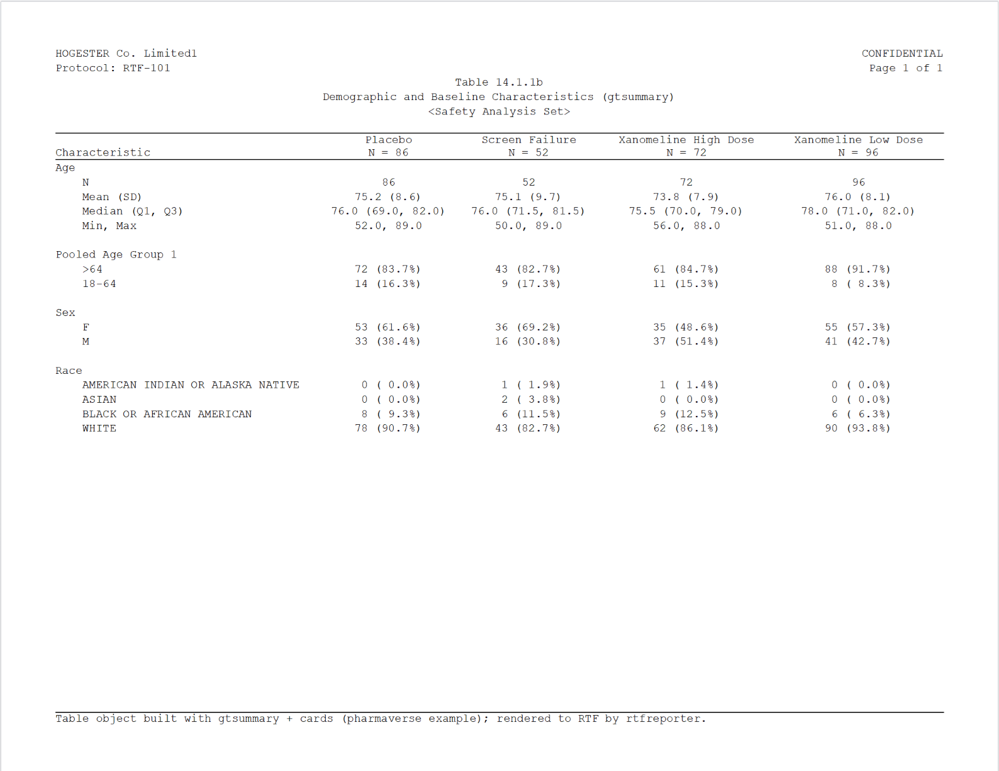
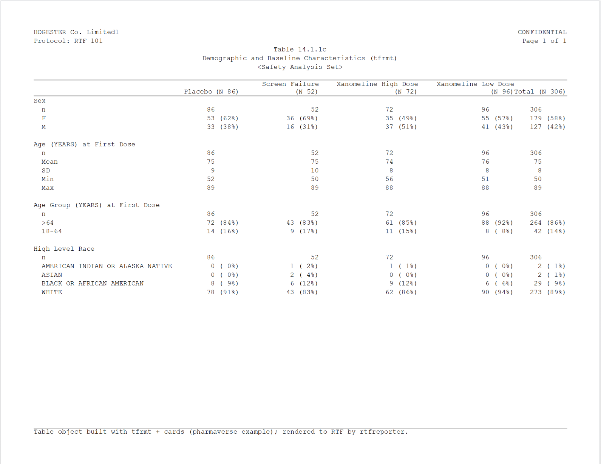
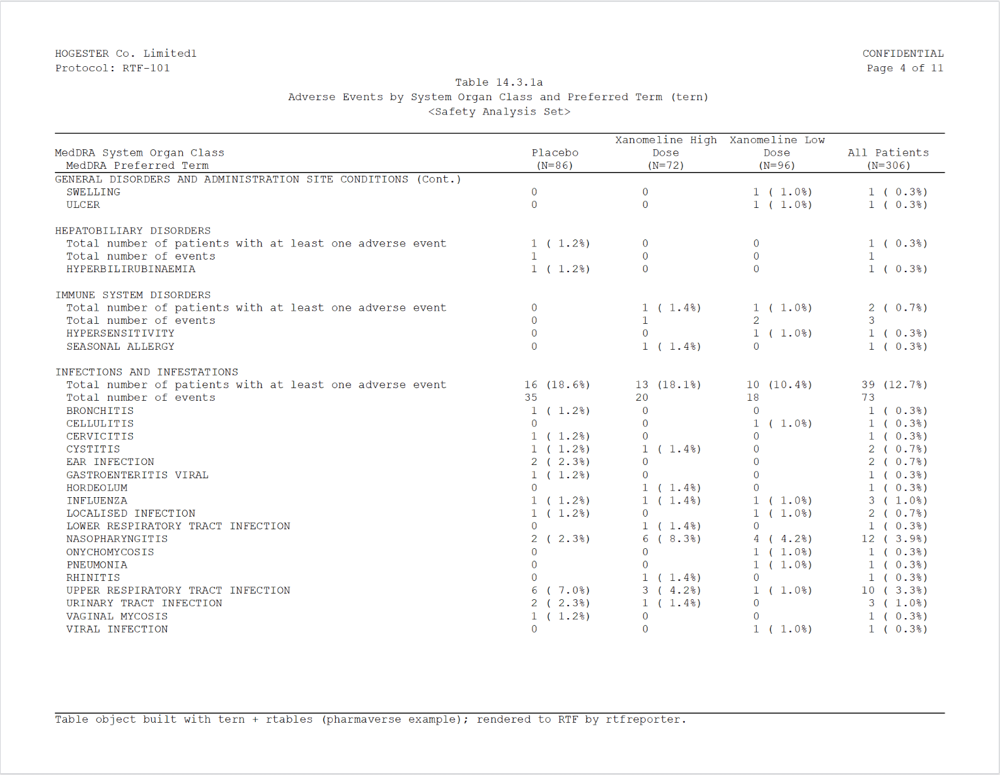
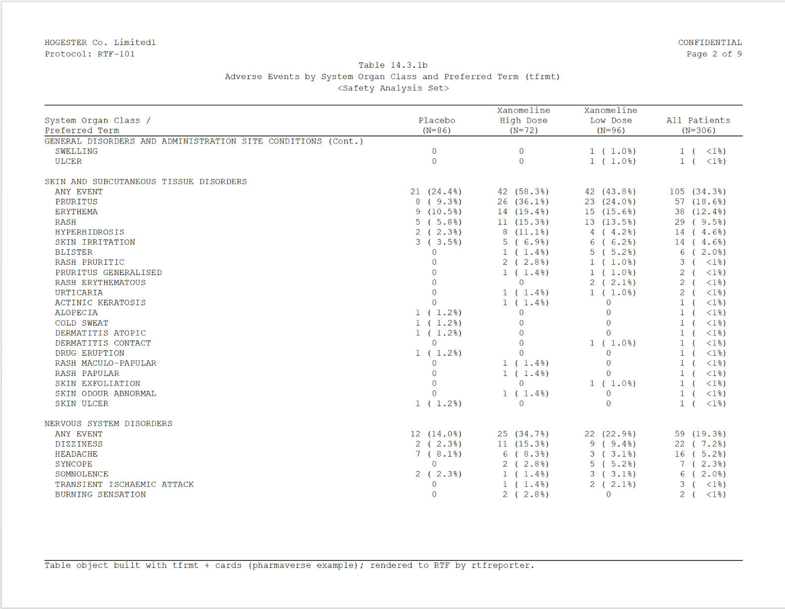
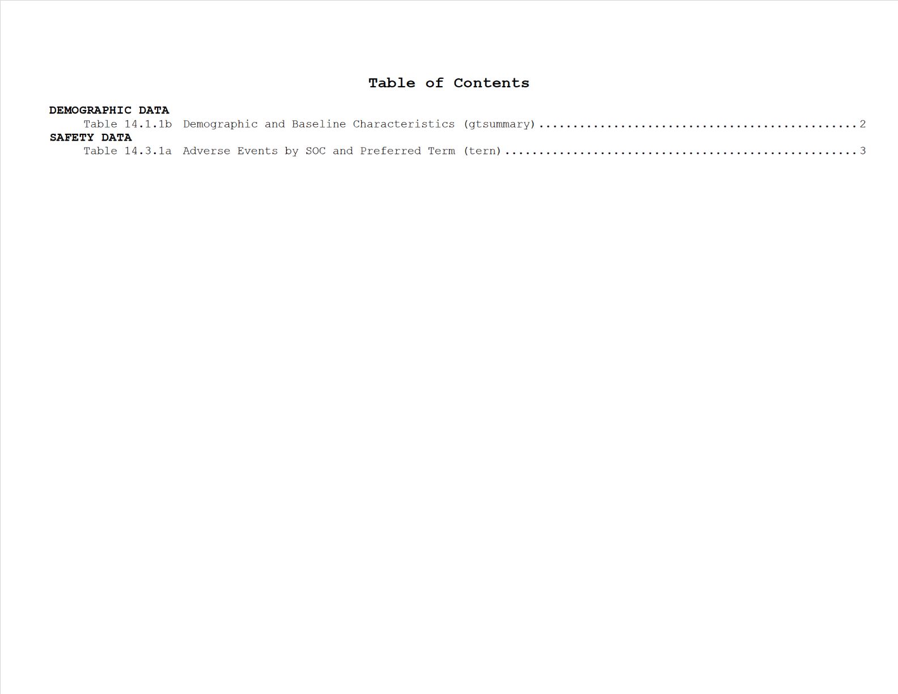

From Pharmaverse Example tables to RTF reports
Source:vignettes/articles/tlg-catalog.Rmd
tlg-catalog.RmdThe last mile for Pharmaverse Example tables
The pharmaverse already produces beautiful clinical tables – tern / rtables, gtsummary and tfrmt compute the statistics and format the numbers, and the official Pharmaverse Examples show exactly how. Where they stop is the last mile: turning that finished table object into the paginated, header-bearing RTF page a regulatory deliverable actually ships. That last little step is the gap rtfreporter fills – with full respect for everything the pharmaverse already does, and without reinventing any of it.
So this article picks up right where a Pharmaverse
Example leaves off. It takes the table objects built –
verbatim – by the demographic
and adverse
events examples and adds only the final RTF step, with as_rtftables() +
rtf_tables() +
generate_rtfreport().
The point is that whichever pharmaverse package built your
table, rtfreporter can read its object and carry it that last
mile.
All credit for the tables below belongs to the Pharmaverse Examples and their authors; rtfreporter only adds the last-mile RTF rendering.
The rendered .rtf files produced by this article
are committed to the repository so you can open them yourself: inst/rtf-examples/.
The file names mark which pharmaverse example table each one came from
(e.g. pharmaverse-adverse-events-tfrmt.rtf).
Rendering the Pharmaverse Example tables
Each table below is shown in four steps: the Pharmaverse
Example code that builds the table object (folded – expand it
to copy), the table object as the example prints it, the
rtfreporter code that carries it the last mile to RTF,
and a snapshot of the resulting .rtf.
Two small helpers build the clinical running header and footer used by every table below (the defaults – landscape Letter, one blank line under the header – need no setup; see Using rtfreporter for the details):
make_header <- function(table_no, title, subtitle = "Safety Analysis Set") {
rtf_header(rows = list(
c(l = "HOGESTER Co. Limited", r = "CONFIDENTIAL"),
c(l = "Protocol: RTF-101", r = "Page {PAGE} of {TOTAL_PAGES}"),
c(c = paste0("Table ", table_no)), c(c = title),
c(c = paste0("<", subtitle, ">"))))
}
make_footer <- function(built_with) rtf_footer(c(l = paste0(
"Table object built with ", built_with,
" (Pharmaverse Example); rendered to RTF by rtfreporter.")))Demographics – three pharmaverse packages
The Pharmaverse demographic example builds the same table
three different ways – a tern TableTree, a gtsummary
gt_tbl and a tfrmt gt_tbl.
as_rtftables() reads all three and the RTF comes out the
same clinical shape.
The data preparation is shared – verbatim from the pharmaverse
example: screen failures are dropped and SEX /
AGEGR1 are recoded and labelled.
library(dplyr)
adsl <- pharmaverseadam::adsl |>
filter(!ACTARM %in% "Screen Failure") |>
mutate(
SEX = case_match(SEX, "M" ~ "MALE", "F" ~ "FEMALE"),
AGEGR1 = case_when(
between(AGE, 18, 40) ~ "18-40",
between(AGE, 41, 64) ~ "41-64",
AGE > 64 ~ ">=65") |>
factor(levels = c("18-40", "41-64", ">=65"))) |>
labelled::set_variable_labels(
AGE = "Age (yr)", AGEGR1 = "Age group", SEX = "Sex", RACE = "Race")tern + rtables (a TableTree)
Pharmaverse Example code (expand to copy)
library(tern)
adsl2 <- adsl |> df_explicit_na()
vars <- c("AGE", "AGEGR1", "SEX", "RACE")
var_labels <- c("Age (yr)", "Age group", "Sex", "Race")
lyt <- basic_table(show_colcounts = TRUE) |>
split_cols_by(var = "ACTARM") |>
add_overall_col("All Patients") |>
analyze_vars(vars = vars, var_labels = var_labels)
dm_tern <- build_table(lyt, adsl2)#> Placebo Xanomeline High Dose Xanomeline Low Dose All Patients
#> (N=86) (N=72) (N=96) (N=254)
#> ————————————————————————————————————————————————————————————————————————————————————————————————————————————
#> Age (yr)
#> n 86 72 96 254
#> Mean (SD) 75.2 (8.6) 73.8 (7.9) 76.0 (8.1) 75.1 (8.2)
#> Median 76.0 75.5 78.0 77.0
#> Min - Max 52.0 - 89.0 56.0 - 88.0 51.0 - 88.0 51.0 - 89.0
#> Age group
#> n 86 72 96 254
#> 18-40 0 0 0 0
#> 41-64 14 (16.3%) 11 (15.3%) 8 (8.3%) 33 (13%)
#> >=65 72 (83.7%) 61 (84.7%) 88 (91.7%) 221 (87%)
#> Sex
#> n 86 72 96 254
#> FEMALE 53 (61.6%) 35 (48.6%) 55 (57.3%) 143 (56.3%)
#> MALE 33 (38.4%) 37 (51.4%) 41 (42.7%) 111 (43.7%)
#> Race
#> n 86 72 96 254
#> AMERICAN INDIAN OR ALASKA NATIVE 0 1 (1.4%) 0 1 (0.4%)
#> BLACK OR AFRICAN AMERICAN 8 (9.3%) 9 (12.5%) 6 (6.2%) 23 (9.1%)
#> WHITE 78 (90.7%) 62 (86.1%) 90 (93.8%) 230 (90.6%)rtfreporter reads the TableTree with
as_rtftables() (sizing the columns to their content with
auto_width), wraps it in the clinical header/footer, and
writes the .rtf:
out_dm_tern <- tempfile(fileext = ".rtf")
rtf_document() |>
rtf_section(page = 1, secinfo = list(
header = make_header("14.1.1a", "Demographic and Baseline Characteristics (tern)"),
footer = make_footer("tern + rtables"))) |>
rtf_tables(as_rtftables(dm_tern, blank_rows = "between_groups",
auto_width = TRUE, cell_format = fmt_count_paren)) |>
generate_rtfreport(out_dm_tern, overwrite = TRUE)
gtsummary + cards (a gt_tbl)
Pharmaverse Example code (expand to copy)
library(gtsummary); library(cards)
theme_gtsummary_compact()
ard <- ard_stack(
adsl,
ard_continuous(variables = AGE),
ard_categorical(variables = c(AGEGR1, SEX, RACE)),
.by = ACTARM, .attributes = TRUE)
dm_gts <- tbl_ard_summary(
cards = ard, by = ACTARM,
include = c(AGE, AGEGR1, SEX, RACE),
type = AGE ~ "continuous2",
statistic = AGE ~ c("{N}", "{mean} ({sd})",
"{median} ({p25}, {p75})", "{min}, {max}")) |>
bold_labels() |>
modify_header(all_stat_cols() ~ "**{level}** \nN = {n}") |>
modify_footnote(everything() ~ NA)| Characteristic | Placebo N = 86 |
Xanomeline High Dose N = 72 |
Xanomeline Low Dose N = 96 |
|---|---|---|---|
| Age (yr) | |||
| N | 86 | 72 | 96 |
| Mean (SD) | 75.2 (8.6) | 73.8 (7.9) | 76.0 (8.1) |
| Median (Q1, Q3) | 76.0 (69.0, 82.0) | 75.5 (70.0, 79.0) | 78.0 (71.0, 82.0) |
| Min, Max | 52.0, 89.0 | 56.0, 88.0 | 51.0, 88.0 |
| Age group | |||
| 18-40 | 0 (0.0%) | 0 (0.0%) | 0 (0.0%) |
| 41-64 | 14 (16.3%) | 11 (15.3%) | 8 (8.3%) |
| >=65 | 72 (83.7%) | 61 (84.7%) | 88 (91.7%) |
| Sex | |||
| FEMALE | 53 (61.6%) | 35 (48.6%) | 55 (57.3%) |
| MALE | 33 (38.4%) | 37 (51.4%) | 41 (42.7%) |
| Race | |||
| AMERICAN INDIAN OR ALASKA NATIVE | 0 (0.0%) | 1 (1.4%) | 0 (0.0%) |
| BLACK OR AFRICAN AMERICAN | 8 (9.3%) | 9 (12.5%) | 6 (6.3%) |
| WHITE | 78 (90.7%) | 62 (86.1%) | 90 (93.8%) |
The gtsummary object is a gt_tbl; rtfreporter reads it
exactly the same way – nothing about the call changes:
out_dm_gts <- tempfile(fileext = ".rtf")
rtf_document() |>
rtf_section(page = 1, secinfo = list(
header = make_header("14.1.1b", "Demographic and Baseline Characteristics (gtsummary)"),
footer = make_footer("gtsummary + cards"))) |>
rtf_tables(as_rtftables(dm_gts, blank_rows = "between_groups",
auto_width = TRUE, cell_format = fmt_count_paren)) |>
generate_rtfreport(out_dm_gts, overwrite = TRUE)
tfrmt + cards (a gt_tbl)
Pharmaverse Example code (expand to copy)
library(tfrmt); library(cards); library(forcats)
ard <- ard_stack(
adsl,
ard_continuous(
variables = AGE,
statistic = ~ continuous_summary_fns(c("N", "mean", "sd", "min", "max"))),
ard_categorical(variables = c(AGEGR1, SEX, RACE)),
.by = ACTARM, .overall = TRUE, .total_n = TRUE)
ard_tbl <- ard |>
shuffle_card(fill_overall = "Total") |>
prep_big_n(vars = "ACTARM") |>
prep_combine_vars(vars = c("AGE", "AGEGR1", "SEX", "RACE")) |>
prep_label() |>
group_by(ACTARM, stat_variable) |>
mutate(across(c(variable_level, label), ~ ifelse(stat_name == "N", "n", .x))) |>
ungroup() |> unique() |>
mutate(
ord1 = fct_inorder(stat_variable) |> fct_relevel("SEX", after = 0) |> as.numeric(),
ord2 = ifelse(label == "n", 1, 2)) |>
mutate(stat_variable = case_when(
stat_variable == "AGE" ~ "Age (YEARS) at First Dose",
stat_variable == "AGEGR1" ~ "Age Group (YEARS) at First Dose",
stat_variable == "SEX" ~ "Sex",
stat_variable == "RACE" ~ "High Level Race", .default = stat_variable)) |>
select(ACTARM, stat_variable, label, stat_name, stat, ord1, ord2) |> unique()
dm_tfrmt <- tfrmt(
group = stat_variable, label = label, param = stat_name,
value = stat, column = ACTARM, sorting_cols = c(ord1, ord2),
body_plan = body_plan(
frmt_structure(".default", ".default", frmt("xxx")),
frmt_structure(".default", ".default",
frmt_combine("{n} ({p}%)", n = frmt("xxx"),
p = frmt("xx", transform = ~ . * 100)))),
big_n = big_n_structure(param_val = "bigN", n_frmt = frmt(" (N=xx)")),
col_plan = col_plan(-starts_with("ord")),
col_style_plan = col_style_plan(col_style_structure(
col = c("Placebo", "Xanomeline High Dose", "Xanomeline Low Dose", "Total"),
align = "left")),
row_grp_plan = row_grp_plan(row_grp_structure(
".default", element_block(post_space = " ")))) |>
print_to_gt(ard_tbl)| Placebo (N=86) | Xanomeline High Dose (N=72) | Xanomeline Low Dose (N=96) | NA | |
|---|---|---|---|---|
| Sex | ||||
| n | 86 | 72 | 96 | 254 |
| FEMALE | 53 (62%) | 35 (49%) | 55 (57%) | 143 (56%) |
| MALE | 33 (38%) | 37 (51%) | 41 (43%) | 111 (44%) |
| Age (YEARS) at First Dose | ||||
| n | 86 | 72 | 96 | 254 |
| Mean | 75 | 74 | 76 | 75 |
| SD | 9 | 8 | 8 | 8 |
| Min | 52 | 56 | 51 | 51 |
| Max | 89 | 88 | 88 | 89 |
| Age Group (YEARS) at First Dose | ||||
| n | 86 | 72 | 96 | 254 |
| 18-40 | 0 ( 0%) | 0 ( 0%) | 0 ( 0%) | 0 ( 0%) |
| 41-64 | 14 (16%) | 11 (15%) | 8 ( 8%) | 33 (13%) |
| >=65 | 72 (84%) | 61 (85%) | 88 (92%) | 221 (87%) |
| High Level Race | ||||
| n | 86 | 72 | 96 | 254 |
| AMERICAN INDIAN OR ALASKA NATIVE | 0 ( 0%) | 1 ( 1%) | 0 ( 0%) | 1 ( 0%) |
| BLACK OR AFRICAN AMERICAN | 8 ( 9%) | 9 (12%) | 6 ( 6%) | 23 ( 9%) |
| WHITE | 78 (91%) | 62 (86%) | 90 (94%) | 230 (91%) |
tfrmt also renders to a gt_tbl, so once more the
rtfreporter call is the same (this example formats its statistics as
integers; rtfreporter reproduces whatever the object contains):
out_dm_tfrmt <- tempfile(fileext = ".rtf")
rtf_document() |>
rtf_section(page = 1, secinfo = list(
header = make_header("14.1.1c", "Demographic and Baseline Characteristics (tfrmt)"),
footer = make_footer("tfrmt + cards"))) |>
rtf_tables(as_rtftables(dm_tfrmt, auto_width = TRUE,
cell_format = fmt_count_paren)) |>
generate_rtfreport(out_dm_tfrmt, overwrite = TRUE)
Adverse events – paginated across many pages
The Pharmaverse adverse events example is a genuinely large
table – 23 system-organ classes and 242 preferred terms – so it spans
many pages. This is where the last mile is most
visible: as_rtftables() paginates the object and repeats
the column and running headers on every page. The example builds it two
ways, which also shows the two pagination
strategies:
-
split = "group_safe"(tern) never breaks an SOC across a page boundary. -
split = "group_force"(tfrmt) fills each page tomax_rowsand repeats the SOC label with" (Cont.)"at the top of the next page when a group is split.
tern + rtables (a TableTree)
Pharmaverse Example code (expand to copy)
library(tern); library(dplyr)
adsl_ae <- pharmaverseadam::adsl |> df_explicit_na()
adae_ae <- pharmaverseadam::adae |> df_explicit_na() |>
var_relabel(AEBODSYS = "MedDRA System Organ Class",
AEDECOD = "MedDRA Preferred Term") |>
filter(SAFFL == "Y")
split_fun <- drop_split_levels
ae_lyt <- basic_table(show_colcounts = TRUE) |>
split_cols_by(var = "ACTARM") |>
add_overall_col(label = "All Patients") |>
analyze_num_patients(
vars = "USUBJID", .stats = c("unique", "nonunique"),
.labels = c(
unique = "Total number of patients with at least one adverse event",
nonunique = "Overall total number of events")) |>
split_rows_by("AEBODSYS", child_labels = "visible", nested = FALSE,
split_fun = split_fun, label_pos = "topleft",
split_label = obj_label(adae_ae$AEBODSYS)) |>
summarize_num_patients(
var = "USUBJID", .stats = c("unique", "nonunique"),
.labels = c(
unique = "Total number of patients with at least one adverse event",
nonunique = "Total number of events")) |>
count_occurrences(vars = "AEDECOD", .indent_mods = -1L) |>
append_varlabels(adae_ae, "AEDECOD", indent = 1L)
ae_tern <- build_table(ae_lyt, df = adae_ae, alt_counts_df = adsl_ae)The object is too large to print, so we go straight to the RTF. The
rtfreporter call adds the deliverable touches:
split = "group_safe" pagination, a wide first column so the
long labels stay on one line, centred data columns, and
fmt_count_paren to line the counts and percentages up:
# adverse-events column alignment: row label left, the data columns centred
ae_col_spec <- c(list(list(col = 1L, align = "left")),
lapply(2:5, function(j) list(col = j, align = "center")))
ae_tern_pages <- as_rtftables(ae_tern, split = "group_safe", max_rows = 36,
blank_rows = "between_groups",
cell_format = fmt_count_paren,
col_rel_width = c(0.50, 0.125, 0.125, 0.125, 0.125),
col_spec = ae_col_spec, row_height_twips = 200)
out_ae_tern <- tempfile(fileext = ".rtf")
rtf_document() |>
rtf_section(page = 1, secinfo = list(
header = make_header("14.3.1a", "Adverse Events by System Organ Class and Preferred Term (tern)"),
footer = make_footer("tern + rtables"))) |>
rtf_tables(ae_tern_pages) |>
generate_rtfreport(out_ae_tern, overwrite = TRUE)
tfrmt + cards (a gt_tbl)
Pharmaverse Example code (expand to copy)
library(tfrmt); library(cards); library(dplyr)
# pharmaverse cards + tfrmt example: safety population, treatment-emergent events
adsl_ae_tf <- pharmaverseadam::adsl |> filter(SAFFL == "Y")
adae_ae_tf <- pharmaverseadam::adae |> filter(SAFFL == "Y" & TRTEMFL == "Y")
ae_ard <- ard_stack_hierarchical(
data = adae_ae_tf, by = ACTARM, variables = c(AEBODSYS, AEDECOD),
statistic = ~ c("n", "p"), denominator = adsl_ae_tf, id = USUBJID,
over_variables = TRUE, overall = TRUE)
ae_tot <- ard_stack_hierarchical(
data = mutate(adae_ae_tf, ACTARM = "All Patients"), by = ACTARM,
variables = c(AEBODSYS, AEDECOD),
denominator = mutate(adsl_ae_tf, ACTARM = "All Patients"),
statistic = ~ c("n", "p"), id = USUBJID,
over_variables = TRUE, overall = TRUE) |>
filter(group2 == "ACTARM" | variable == "ACTARM")
ae_card <- bind_ard(ae_ard, ae_tot) |>
shuffle_card(fill_hierarchical_overall = "ANY EVENT") |>
prep_big_n(vars = "ACTARM") |>
prep_hierarchical_fill(vars = c("AEBODSYS", "AEDECOD"), fill = "ANY EVENT") |>
mutate(ACTARM = ifelse(ACTARM == "Overall ACTARM", "All Patients", ACTARM))
ord_soc <- ae_card |>
filter(ACTARM == "All Patients", stat_name == "n", AEDECOD == "ANY EVENT") |>
arrange(desc(stat)) |> mutate(ord1 = row_number()) |> select(AEBODSYS, ord1)
ord_pt <- ae_card |>
filter(ACTARM == "All Patients", stat_name == "n") |>
group_by(AEBODSYS) |> arrange(desc(stat)) |>
mutate(ord2 = row_number()) |> select(AEBODSYS, AEDECOD, ord2)
ae_card <- ae_card |>
full_join(ord_soc, by = "AEBODSYS") |>
full_join(ord_pt, by = c("AEBODSYS", "AEDECOD")) |>
select(AEBODSYS, AEDECOD, ord1, ord2, stat, stat_name, ACTARM)
ae_tfrmt <- tfrmt_n_pct(
n = "n", pct = "p",
pct_frmt_when = frmt_when(
"==1" ~ frmt("(100%)"), ">=0.995" ~ frmt("(>99%)"), "==0" ~ frmt(""),
"<=0.01" ~ frmt("(<1%)"), "TRUE" ~ frmt("(xx.x%)", transform = ~ . * 100))) |>
tfrmt(
group = AEBODSYS, label = AEDECOD, param = stat_name, value = stat,
column = ACTARM, sorting_cols = c(ord1, ord2),
col_plan = col_plan("System Organ Class / Preferred Term" = AEBODSYS,
Placebo, `Xanomeline High Dose`, `Xanomeline Low Dose`,
-ord1, -ord2),
row_grp_plan = row_grp_plan(row_grp_structure(
group_val = ".default", element_block(post_space = " "))),
big_n = big_n_structure(param_val = "bigN", n_frmt = frmt(" (N=xx)"))) |>
print_to_gt(ae_card)This one renders to a gt_tbl, so we use
split = "group_force" pagination, two/three-line column
headers (so the data columns can be narrow), and
fmt_count_paren_bare (which also lines up the bare
0 counts):
ae_hdr <- c("System Organ Class /\nPreferred Term", "Placebo\n(N=86)",
"Xanomeline\nHigh Dose\n(N=72)",
"Xanomeline\nLow Dose\n(N=96)", "All Patients\n(N=254)")
ae_tfrmt_pages <- as_rtftables(ae_tfrmt, split = "group_force", max_rows = 36,
col_header = ae_hdr,
col_rel_width = c(0.50, 0.125, 0.125, 0.125, 0.125),
col_spec = ae_col_spec, cell_format = fmt_count_paren_bare,
row_height_twips = 200)
out_ae_tfrmt <- tempfile(fileext = ".rtf")
rtf_document() |>
rtf_section(page = 1, secinfo = list(
header = make_header("14.3.1b", "Adverse Events by System Organ Class and Preferred Term (tfrmt)"),
footer = make_footer("tfrmt + cards"))) |>
rtf_tables(ae_tfrmt_pages) |>
generate_rtfreport(out_ae_tfrmt, overwrite = TRUE)
Assembling a deliverable – with a Table of Contents
A real submission bundles many TLGs into one file. Render each table
to its own .rtf (the recipes above leave the paths in
out_dm_gts and out_ae_tern), then concatenate
them with assemble_rtf().
Passing toc = a list of toc_heading() / toc_entry() adds a
clickable Table of Contents at the front, and
toc_page_numbering = "decimal" numbers its pages.
Each table keeps its own baked-in Page X of Y footer:
the recipes use the static {PAGE} /
{TOTAL_PAGES} tokens (resolved to real numbers at render
time, so every viewer shows them) rather than the dynamic
{AUTO_PAGE} / {AUTO_TOTAL_PAGES} fields.
Show the code (assemble + Table of Contents)
library(rtfreporter)
bundle <- tempfile(fileext = ".rtf")
assemble_rtf(
c(out_dm_gts, out_ae_tern), bundle, overwrite = TRUE,
toc = list(
toc_heading("DEMOGRAPHIC DATA", level = 1),
toc_entry("Table 14.1.1b Demographic and Baseline Characteristics (gtsummary)",
file = out_dm_gts, level = 2),
toc_heading("SAFETY DATA", level = 1),
toc_entry("Table 14.3.1a Adverse Events by SOC and Preferred Term (tern)",
file = out_ae_tern, level = 2)),
toc_title = "Table of Contents",
toc_page_numbering = "decimal")The generated Table of Contents:

and a body page from the assembled deliverable (note the per-table
Page X of Y footer):
For a whole folder of .rtf files there is a one-call
shortcut that reads each file’s header, builds the Table of Contents and
assembles the deliverable – optionally saving the editable “assembly
spec” (an .xlsx / .csv you can tweak and
re-run):
assemble_folder("path/to/rtf", "deliverable.rtf", spec_file = "spec.xlsx")See assemble_folder(),
assemble_spec()
and assemble_from_spec().
Using rtfreporter
The examples above kept the rtfreporter-specific code to a minimum. This section collects the pieces you can tune.
Headers and footers
rtf_header() / rtf_footer() take rows of
left / centre / right cells (l / c /
r). For “Page X of Y” there are two flavours of token:
-
{AUTO_PAGE}/{AUTO_TOTAL_PAGES}– dynamic RTF fields, recomputed by the viewer (and acrossassemble_rtf()), so they always show the live page numbers. -
{PAGE}/{TOTAL_PAGES}– static numbers baked in at render time, so each table carries its own realPage X of Ytext that every viewer shows identically andassemble_rtf()leaves untouched. The recipes above use these.
Pagination
as_rtftables() turns one table object into a list of
one-page rtftables. The split argument
controls how:
-
"group_safe"– never breaks a row group; an SOC that would overflow moves whole to the next page. -
"group_force"– cuts strictly atmax_rows, inserting a(Cont.)row so the reader knows the group continues. -
"by_value"– one group per page. -
"rows"– split at explicit row positions (split_rows). -
"none"– a single page.
blank_rows = "between_groups" inserts a blank line
between row groups, and align_count_pct = TRUE re-pads
n (xx.x%) cells so the percentages line up in a monospaced
renderer.
Cell formatting
Different table packages write count/percent cells in different
notations, so rtfreporter does not hard-code one. Instead,
as_rtftables(cell_format = ) takes a cell-format
function that is applied column-by-column to the body just
before pagination. rtfreporter ships a few:
-
fmt_count_paren()– the workhorse, used by both adverse-events tables. It scans the whole column, then right-justifies the integer count and right-justifies the number inside the parentheses, so a column mixing"4 ( 4.7%)","10 (11.6%)","3 (<1%)","70 (100%)"and a lone"0"all share one width and line up on both the count digit and the percentage. (It also copes with the 4-digit event totals in the tern table, which the fixed-width helper below cannot.) -
align_count_pct = TRUE/realign_count_pct()– the older fixed-width helper for plain"n (xx.x%)"cells; kept for back-compatibility. -
fmt_right_align()– the simplest one: right-justify a column to a common width.
A cell-format function follows a small contract:
It takes one column – a character vector – and returns a character vector of the same length. Cells it should not touch are returned unchanged, and any padding uses the non-breaking space (U+00A0, written
"\u00a0") so Word does not collapse it.
When none of the built-ins matches your data, write your own.
fmt_right_align() is the template – here is the whole of
it, which you can copy and adapt:
my_right_align <- function(x, nbsp = "\u00a0") {
x <- as.character(x)
nz <- nzchar(trimws(x)) # the non-empty cells
w <- max(nchar(x[nz]), 0L) # widest cell in the column
x[nz] <- formatC(x[nz], width = w, flag = "") # right-justify to that width
gsub(" ", nbsp, x, fixed = TRUE) # spaces -> non-breaking spaces
}
my_right_align(c("12 (3.6%)", "0", "1 (0.5%)"))
#> [1] "12 (3.6%)" " 0" " 1 (0.5%)"Pass it with cell_format = my_right_align (a single
function applies to every data column; a list applies one function per
column).
What carries across, by source
What does and does not survive the conversion (column headers,
spanning, alignment, titles, footnotes) depends on the source object and
is documented in the What is carried, by source table in ?as_rtftables.
Notes
- The output is
.rtf; open it in Word / LibreOffice (or batch-convert to PDF). - The pharmaverse example tables are reproduced here unchanged; only the final RTF-rendering step is rtfreporter’s.
Where next
- Worked example: demographics — one table, start to finish
- Worked example: laboratory — a shift table, start to finish
The four recipes (?rtfreporter-recipes) are the same
ground covered as runnable help-page examples: demographics, adverse
events, PK and laboratory, each data-in to RTF-out.